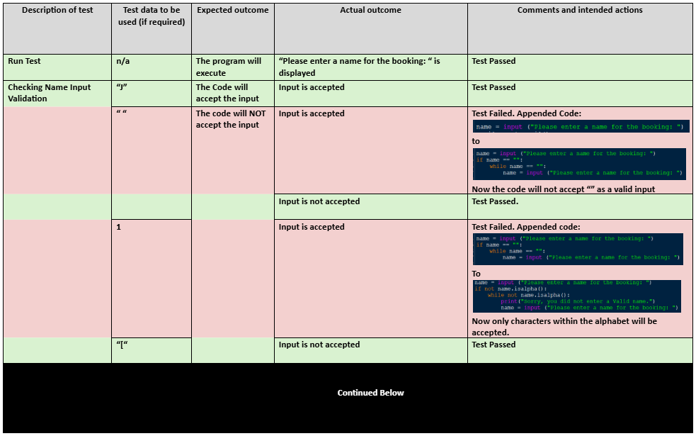

ESP - Task 2: Debugging Existing Code
What Is It?
Task 2 is all about debugging.
You will be given a piece of broken code that you must thoroughly test, ammend errors and document all the changes made in a Test Plan.
The final goal is to produce a functional code that meets the requirements of the brief.
The code provided will be in Python so ensure you are familiar with the language.
Test Plans
Nice.. What are Test Plans..?A Test Plan is a document that showcases:
- What tests you carried out on the code,
- The expected results of those tests,
- The actual results of those tests,
- Any errors found,
- And the changes you made to fix those errors.
Here is an example of a filled in Test Plan:

key features:
- Test plan clearly outlines:
- What was tested,
- Expected results,
- Actual results,
- Confirmation on if Test passed or failed,
- Errors found,
- And the changes made to fix those errors.
- Test plan is color coded.
Marks?
Task 2 is worth 21 marks The marks are split into 3 parts:
- Using Testing to Identify Errors - 8 marks
- Your Understanding of the Testing Process - 4 marks
- The Solution - 9 marks
Time?
You will have 3 Hours to complete this task.
Tips
Tips for this task include:
- Practise Python waaaaay> too much
- Color coding your Test Plan to make it easier to read,
e.g: using red for errors, green for successful tests, etc. - Using comments in your code to explain changes made,
- Make sure you understand the brief and requirements before starting,
- Ensure you test thoroughly and document everything in your Test Plan.